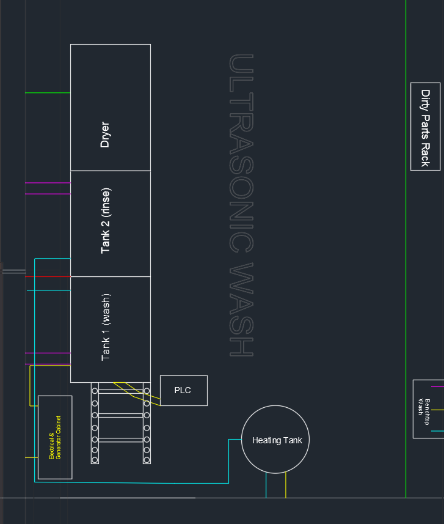
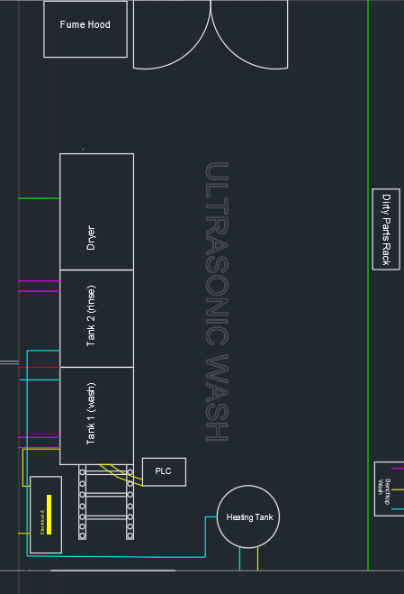
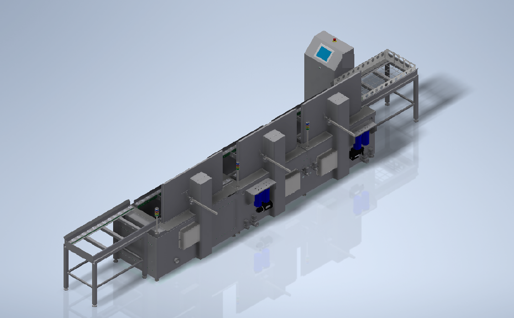

Case Study 01 · Facility & Program Design
Ultrasonic Washroom Project
Facility design & cross-functional program ownership

Problem
Our electrolyte filling equipment needed a reliable, repeatable rebuild and maintenance routine for its critical assemblies to keep producing quality cells. Because electrolyte is a hazardous chemical, that routine required a dedicated space where contaminated components could be safely cleaned and serviced without exposing personnel to hazardous vapors.
My Role & Constraints
I owned the process and user requirements definition and the room layout design, then worked directly with an ultrasonic cleaning equipment manufacturer through every phase of their custom wash/rinse/dry tank design, reviewing and approving each design phase. In parallel, I defined the facility's utility requirements — power, water, and air quality — and calculated the exhaust capacity needed to maintain a safe air-change rate in the room, then delivered a full utilities engineering equipment matrix (EQM) to the facilities team for installation.
Approach & Key Decisions
- Partnered with the equipment vendor from concept through final approval drawings, iterating on tank design across multiple vendor-submitted revisions.
- Designed a phased rollout: a Phase 1 space followed by a Phase 2 expansion that doubled capacity using the same proven layout.
- Defined exhaust, drainage, and electrical requirements to meet safety and environmental standards for hazardous-chemical handling.



Outcome
Delivered a dedicated, safe workspace that has let the electrolyte filling program run sustainably for 4+ years. The design was also referenced as the baseline for a similar workspace built at another manufacturing site, where I provided design consultation to the local engineering team.